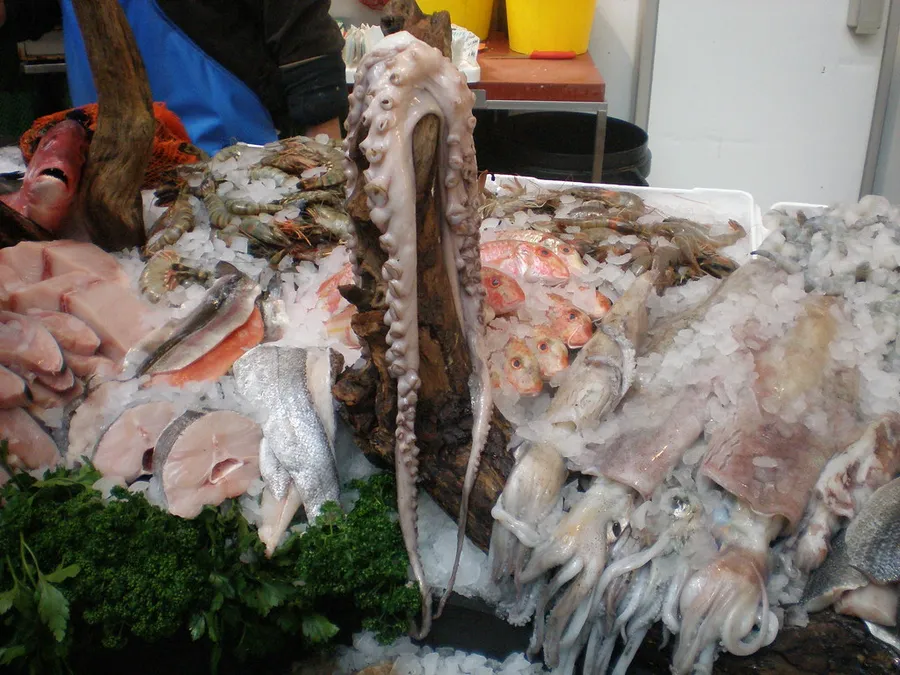

Calamaro Patagonia C4
Intero, aperto, ad anelli, a strisce, butterfly. Il decongelato pronto è l'articolo che muove più chili di tutto il magazzino: si apre la busta e va in frittura.
Pezzature
intero pulitoapertoanelli e ciuffistriscebutterfly
Provenienza
PatagoniaArgentina
Formato
Chiedi disponibilità e prezzo
cartoni 5 kg · IQF 6x900 g · buste 10 kg